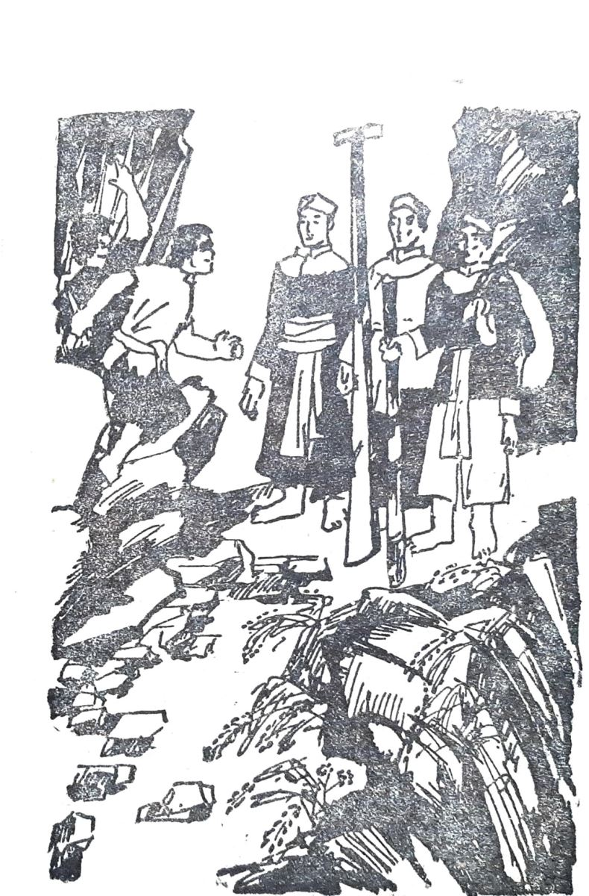

Khi Tây Sơn sắp dựng cờ khởi nghĩa, cả một vùng Quy Nhơn sôi sục. Người ta hối hả làm nốt những việc chuẩn bị cuối cùng.
Quân khởi nghĩa chọn thành Quy Nhơn để đánh trận mở đầu. Nguyễn Huệ muốn xuống sát đê xem xét binh tướng triều đình. Người anh hùng trẻ cho rằng đánh trận mở đầu phải thắng thật to.
Đây là một chuyến đi cần phải thực kín đáo. Nguyễn Huệ chỉ đem theo hai tướng: đó là Đại đao Trần Quang Diệu và tướng quân bay Phan Văn Lân. Ba người mặc giả làm lái buôn. Họ mang binh khí tùy thân nhưng đều có cách che mắt mọi người. Nguyễn Huệ thắt ngang lưng một dải lụa dài ba sải. Dòng võ Tây Sơn có lối đánh bằng một dải lụa rất lợi hại, có thể quấn bắt khí giới đối phương rất nhanh nhạy. Phan Văn Lân thiên dùng roi đuôi cọp. Lần đi này Lân thay roi bằng một đoạn tre được trông như đòn gánh. Chỉ Trần Quang Diệu là khó giấu binh khí. Anh ta xưa nay dùng đại đao. Bây giờ vác đao theo thì không được. Cuối cùng Diệu phải vác theo một cái bơi chèo. Bơi chèo thì nhẹ hơn đại đao nhiều nhưng thôi đành vậy. Diệu chọn một cái bơi chèo bằng gỗ cau ngâm nước gì sắt nom đen quánh lại.
Đường xuống Quy Nhơn phải qua một vùng núi thấp nhưng rừng thật rậm. Người ta đồn dạo này có một đám cướp hoành hành ở đó. Kẻ cầm đầu đám cướp này nghe nói là một tay võ nghệ rất giỏi. Gã dùng một cây siêu đao mà đường đao thật mê ly kỳ dị. Tính gã rất lạ. Gã không bao giờ lấy của người già và đàn bà. Nhưng nếu là quan quân thì gã lột đến cái khố cũng không còn mà đeo. Tiếng tâm đám cướp đồn ra toàn phủ Quy Nhơn. Vì thế, Nguyễn Huệ và hai tướng rất đề phòng quãng đường này.

.Khỏi một chỗ quẹo, đến một khoảng rừng hơi thưa, ba người chợt nhìn thấy lố nhố đến hơn mười người cầm binh khí đứng dàn ngang đường. Từ xa nhìn thấy binh khí của chúng tua tủa. Tên cầm đầu cao lớn, râu dài xanh ngắt, hai mắt xếch long lanh, đôi tay cầm ngang một cây siêu đao sáng choang.
Tướng cướp cười nhạt bảo:
-Có tiền bạc thì bỏ ra rồi vái ta ba cái. Nếu vái khéo, có khi ta thương ta cho đi.
Trần Quang Diệu cũng cười, chỉ cây siêu đao trong tay tướng cướp hỏi lớn:
-Ông ơi, cái này là cái phảng cắt cỏ phải không? Ông có lưỡi phảng đẹp thật đấy.
Tướng cướp vừa cáu vừa buồn cười, gã trừng mắt:
-Nom ngươi mặt mũi sáng sủa ngỡ là kẻ biết điều mà sao lại ngu thế. Này, siêu đao là thứ binh khí khó tập, khó đánh nhất trong mười tám loại binh khí mà nhà anh lại nhầm với phảng cắt cỏ. Xem đây!
Tướng cướp múa một bài siêu đao. Bài đao múa thật đẹp và là bài đao nổi tiếng. Ba người kinh ngạc nhìn nhau. Đây là bài đao thầy võ Ngô Mãnh đã dạy anh em Ngô Văn Sở. Đây là một trong hai dòng đao siêu tuyệt ở đất võ này. Một là dòng đao Ngô Mãnh, hai là dòng đao nhà họ Trần của Trần Quang Diệu.
Tướng cướp đi xong 32 đường đao, mặt không đổi sắc, hơi thở vẫn đều hòa. Nguyễn Huệ đưa mắt cho Trần Quang Diệu. Diệu hiểu ý cười:
-Ông múa cái phảng đẹp lắm. Tôi cũng biết múa đấy.
Tướng cướp cười sằng sặc:
-Ngươi muốn lừa ta rời binh khí chứ gì? Này, bảo cho các ngươi biết, ta đưa đao cho ngươi, lúc nào ta muốn đoạt lại là được ngay, có khó gì. Đao đây, xem ngươi múa may ra sao. Nếu ngươi múa nổi được một đường đao trông được thì- tướng cướp dằn từng tiếng -thì ta tha chết cho cả ba.
Trần Quang Diệu giả vờ lóng ngóng đỡ lấy cây đao nặng. Đám lâu la của tướng giặc cười ran lên. Nhưng chúng sửng sốt khi thấy Trần Quang Diệu thả cho cây đao rớt cán xuống khủy tay thành thế chào. Tướng cướp cũng giật mình sững người. Thế chào của bài Liễu Đông đao. Đây là bài đao siêu tuyệt của nhà họ Trần.
Trần Quang Diệu đưa chậm chậm cây siêu đao. Từ bước chân rê, từ cái hất đầu, từ cái liếc xéo …tất cả hòa hợp làm cho bài đao múa đẹp tuyệt với Khi Trần Quang Diệu đi hết 54 đường Liễu Đông đao, tướng cướp bước lên chắp hay tay vái trang trọng, miệng cười ha hả:
-Ông anh chính là Đại đao Trần Quang Diệu rồi.
Trần Quang Diệu cũng cười đáp lễ:
-Còn ông anh đích thị Siêu đao Võ Văn Dũng.
Mấy người ôm chầm lấy nhau mừng rỡ. Trần Quang Diệu nói tên Nguyễn Huệ và Phan Văn Lân. Nguyễn Huệ nói:
- Tráng sĩ có cùng đường cũng không nên chặn đường người ta lấy của thế này.
Võ Văn Dũng hổ thẹn:
-Tôi chặn giết chúa Nguyễn và quan tướng triều đình. Bây giờ cùng đường đứng chặn ở đây. Nhưng từ trước tới nay tôi chưa hề lấy tiền của những người yếu hèn.
Trần Quang Diệu cười lớn:
-Siêu đao Võ Văn Dũng đâu đến nỗi cùng đường làm bậy. Sắp đến ngày dựng cờ rồi. Ngọn cở Tây Sơn phải có ông anh phù tá.
Nguyễn Huệ nói cho Võ Văn Dũng biết mục đích chuyến đi của ba người. Võ Văn Dũng cười to:
-Thế thì xong rồi. Tình hình Quy Nhơn ra sao tôi rành như những vệt trên bàn tay tôi. Thế này nhé…
Những người anh hùng áo vải cùng phá lên cười. Võ Văn Dũng giải tán đám cướp, ai bằng lòng theo quân khởi nghĩa thì thu dụng. Siêu đao Võ Văn Dũng theo Tây Sơn.
Tuần trăng sau. Tây Sơn khởi nghĩa, mở đầu bằng trận hạ thành Quy Nhơn rất gọn. Trận thắng thật giòn giã
Đại Lải cuối mùa Xuân 1983